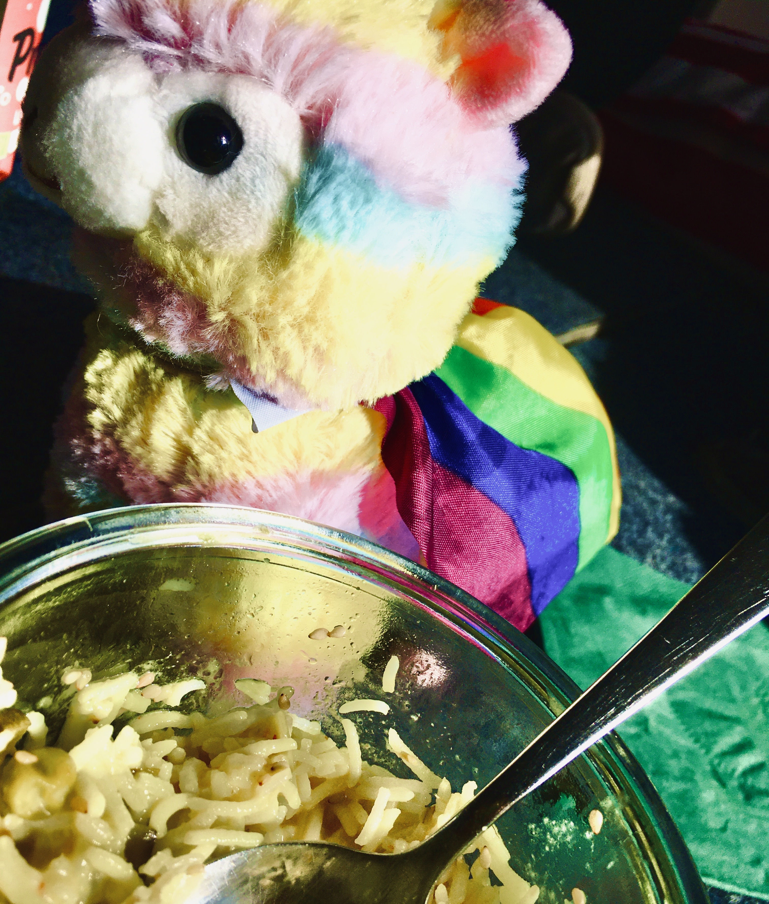

Wie viel Verschwörung steckt in dir?
Hi, egal ob du nur zufällig auf diese Seite gestoßen bist oder du ganz explizit danach gesucht hast, herzlich willkommen auf einer weiteren, mittelmäßigen Seite in den Weiten des großartigen Internets!
Hier kannst du dein Wissen zu Fake News, Verschwörungsideologien und Mythen zum Thema "erneuerbare Energien" testen!
Das wars auch schon, jetzt könnt ihr sofort reinstarten!
Zum Quiz
